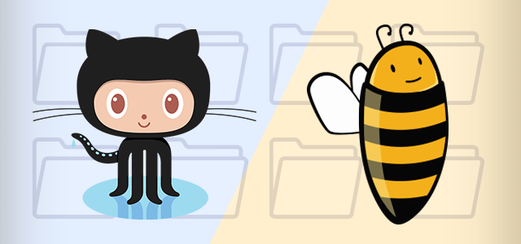
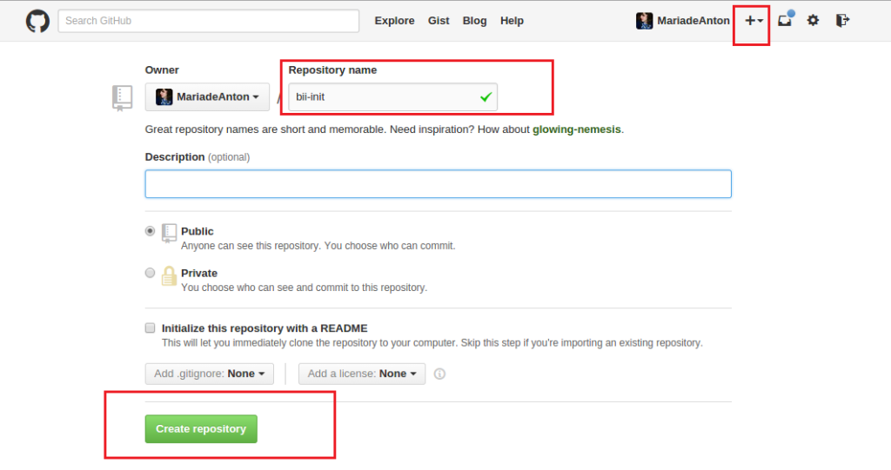
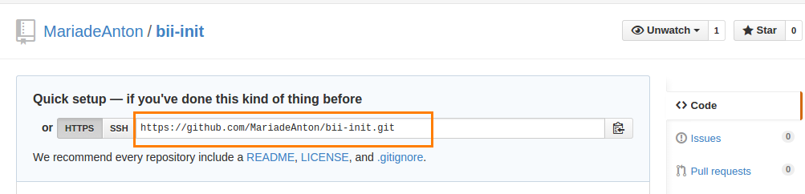
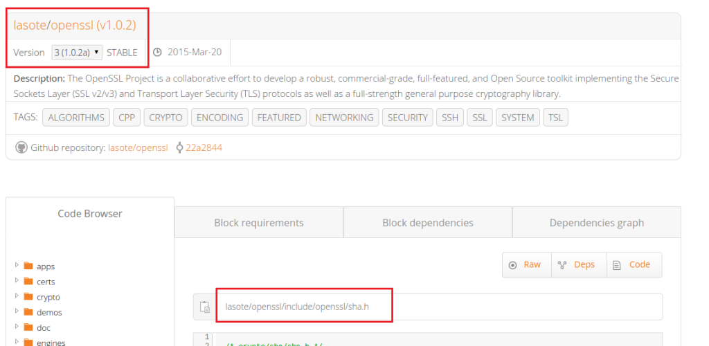

Today’s post is biicode’s getting started guide with Git and GitHub. We will depend on OpenSSL v1.0.2 biicode block to generate MD5 (Message-Digest Algorithm 5) and SHA-1 (Secure Hash Algorithm) hashes in your Terminal.

Before anything else (of course), you’ll need Git, CMake > 3.0, biicode > 2.6 and both accounts: GitHub and biicode.
Make sure you have all them, run --version in your terminal:
1 2 3 4 5 | git --version cmake --version bii --version #install c++ tools for biicode (optional) bii setup:cpp |
Now, let’s begin with Git and Github!
Create a GitHub repo on the web page and copy the repo’s URL:


Now, go back to your terminal. Clone the repo (this clones an empty git folder for your project to live in), navigate to that folder and run bii init -L :
1 2 3 4 5 6 | # clone the repo clone https://github.com/MariadeAnton/bii-init.git # get into its folder cd your_repo # initialize bii init -L |
Write the code
Create three files: a sha1.cpp a md5.cpp to generate both hashes, SHA1 and MD5, and also a biicode.conf file.
1 2 3 | echo "//sha1 code goes here" >> sha1.cpp echo "//md5 code goes here" >> md5.cpp echo "# biicode.conf file" >> biicode.conf |
sha1.cpp code
1 2 3 4 5 6 7 8 9 10 11 12 13 14 15 16 17 18 19 20 21 22 23 | #include "openssl/sha.h" #include <string.h> #include <stdio.h> int main(){ // The data to be hashed const unsigned char data[] = "Hello, world!"; size_t length = sizeof(data); unsigned char hash[SHA_DIGEST_LENGTH]; SHA1(data, length, hash); char mdString[SHA_DIGEST_LENGTH]; for(int i = 0; i < (SHA_DIGEST_LENGTH/2) - 1; i++) sprintf(&mdString[i*2], "%02x", (unsigned int)hash[i]); printf("sha1 digest: %s\n", mdString); return 0; } |
md5.cpp code
1 2 3 4 5 6 7 8 9 10 11 12 13 14 15 16 17 18 19 20 | #include "openssl/md5.h" #include <stdio.h> #include <string.h> int main() { unsigned char digest[MD5_DIGEST_LENGTH]; char string[] = "hello biicode!"; MD5((unsigned char*)&string, strlen(string), (unsigned char*)&digest); char mdString[33]; for(int i = 0; i < 16; i++) sprintf(&mdString[i*2], "%02x", (unsigned int)digest[i]); printf("md5 digest: %s\n", mdString); return 0; } |
biicode.conf
– biicode’s configuration file
Fill the biicode.conf file so bii gets the OpenSSL v1.0.2. dependencies your project needs via [requirements] and [includes] sections:
biicode.conf
1 2 3 4 5 | [requirements] lasote/openssl(v1.0.2): 3 [includes] openssl/*: lasote/openssl/include |

running your project
bii build and you’re ready to run your project and check the generated MD5 and SHA-1 hashes.
1 2 3 4 | bii build cd bin ./#run SHA1 or MD5 #see the hashes, md5 digest and sha1 digest. |
What bii files/folders does your repo need?
Your GitHub repo only needs biicode.conf file, a CMakeLists.txt and your code. You can safely ignore bii/ and bin/ folders as they’re auxiliary. bii/ holds subfolders like cmake/, build/ or deps/, and bin/ contains the output binaries, frequently ignored too.
Create a .gitignore file and write bii and bin to ignore both folders:
1 2 | echo "bii" >> .gitignore echo "bin" >> .gitignore |
Add and commit your changes:
1 2 3 4 | # add all files but the ones ignored git add --all # commit message git commit -m "my OpenSSL example biicode block" |
Share your code
It’s finally time to share your code. Now all is setup to push your project to GitHub and publish a biicode block referring to your GitHub repo:
1 2 3 4 | # push to GitHub git push origin master # publish to biicode bii publish -r |
Want a repo with the files needed? Just fork mine and go!
1 2 3 | clone https://github.com/your_github_username/bii-init.git cd bii-init bii init -L |
There are many options available to automatically publish (to biicode) from GitHub. We usually use Travis-ci and Appveyor to achieve so:
For those who enjoy using multiple blocks at the same time, we recommend using a git repo for each biicode block.
Don’t forget that all layouts are fully customizable via layout.bii file, check all the options available in the docs section: Customizing your layout.
As always, we’re available at our forum or Stackoverflow tag. You can also write us and request features at our roadmap.
Related Posts